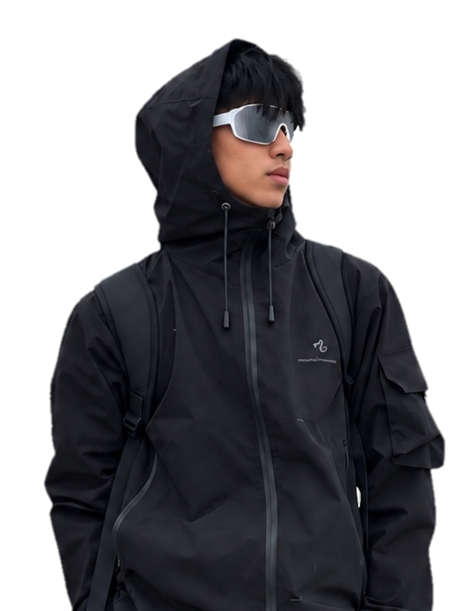
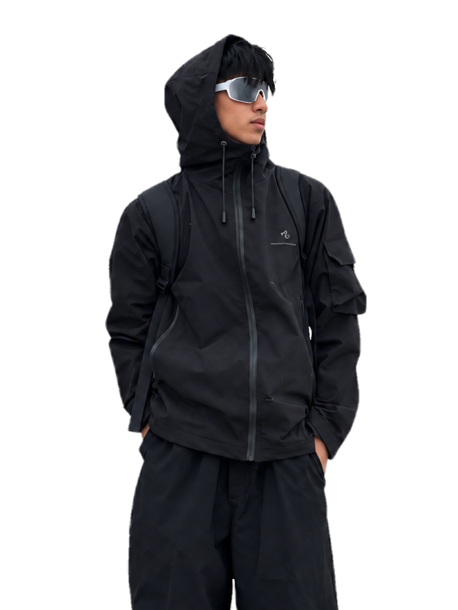
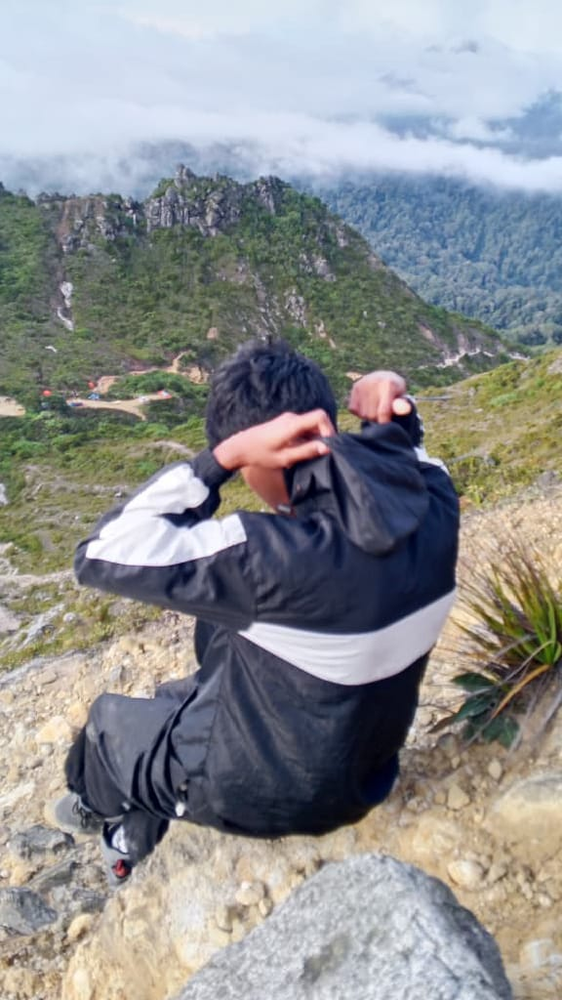
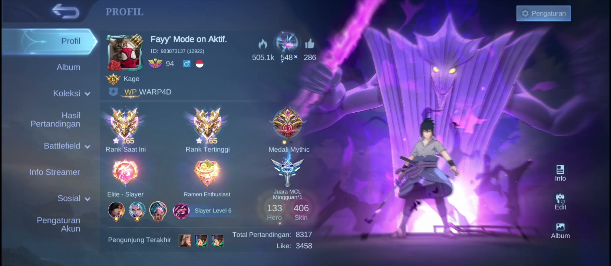

Fahri Rahmadhan
Still learning.
Still building.
Saya tidak ingin membuat portfolio yang terlihat seperti saya sudah menguasai semuanya. Saya lebih suka menunjukkan proses yang benar-benar sedang saya jalani.

that's me.Haii Saya Fahri Rahmadhan Seorang pelajar XII RPL 1 yang suka mengubah ide sederhana menjadi halaman yang bisa dibuka, diklik, dan digunakan.
Sekarang saya fokus memperkuat dasar web development — dari struktur HTML, layout CSS, komponen Bootstrap, interaksi JavaScript sampai PHP dan MySQL. Setiap project memberi saya masalah baru untuk dipecahkan dan cara baru untuk belajar.
Jadi portfolio ini bukan sekadar tempat menaruh hasil akhir. Ini juga dokumentasi kecil tentang bagaimana saya berkembang dari satu project ke project berikutnya.
Riwayat
Project saya.
Project yang saya buat selama belajar web development. Bukan cuma hasil akhir — setiap project menunjukkan proses, percobaan, dan cara saya membangun sesuatu dari nol.
Bahasa Yang saya gunakan.
HTML
Struktur halaman, semantic markup, section, form, dan fondasi utama website.
Library yang saya pakai.
Library yang dipakai untuk scrolling, animation, typography, dan interaction di portfolio ini.
Cleaner layouts, better responsive design, stronger logic, and more project experience.
Mountain
Tidak semua cerita terjadi di depan laptop. Beberapa perjalanan cukup disimpan lewat foto, dan beberapa momen lebih pas diceritakan lewat video.

02 FOTOMenutup laptop bukan berarti berhenti melihat dunia.
Hal-hal yang
saya sukai.
Bukan cuma soal apa yang saya kerjakan. Ada permainan, film, dan musik yang selalu punya tempat sendiri di waktu luang saya.
Permainan

01Mobile Legends
Seru, ramai, dan selalu ada cerita setelah satu pertandingan.
Roblox
Masuk ke dunia lain dan bermain dengan cara yang berbeda.
Film
Tekan poster untuk membuka trailer langsung di halaman ini.
Musik
Top 10 fav song.
Geser koleksinya ke samping. Klik piringan untuk memilih lagu.
SEE MY PLAYLIST IN SPOTIFYStaying
Siap diputar · Lizzy McAlpine
ADA YANG MAU DIBAHAS?
Mari terhubung.
Mau ngobrol soal website, project, kolaborasi, atau sekadar menyapa? Pilih salah satu kontak di samping dan langsung terhubung.